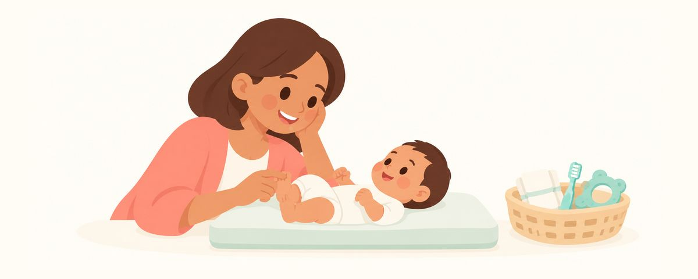

출산 준비물에 넣을 아기 입안 용품: 거즈·칫솔·불소치약·치발기 고르는 법
아기 입안 용품은 거즈, 아기 칫솔, 불소치약, 치발기면 충분해요. 고를 때 볼 점과 쓰는 시기, 사지 말아야 할 벤조카인 젤과 호박 목걸이를 정리했어요.
한눈에 보기
- 거즈, 아기 칫솔, 치약, 치발기면 충분해요
- 치약은 불소 1000ppm 이상 어린이용으로 골라요
- 벤조카인 젤과 호박 목걸이는 사지 마세요
출산 준비물을 챙기다 보면 아기 구강용품도 종류가 많아 무엇을 사야 할지 헷갈려요. 사실 필요한 건 몇 가지뿐이에요. 미리 넣어 두면 좋은 용품과 고르는 요령, 오히려 사지 말아야 할 것을 정리했어요.
준비물은 생각보다 단출해요
아기 입안 관리는 이가 나기 전과 첫 이가 난 뒤로 나뉘어요. 준비물도 이 흐름에 맞춰 생각하면 쉬워요.
이가 나기 전에는 수유 후 잇몸을 닦아 주는 게 전부예요. 입안에 남은 우유를 닦아 내고, 아기가 입안을 만지는 손길에 익숙해지게 하는 단계예요. 깨끗한 거즈 한 장이면 충분해요.
첫 이가 보이는 날부터는 충치가 생길 수 있어요. 이때부터 아기 칫솔과 불소치약이 필요해요. 이가 나느라 잇몸이 간지러울 때를 대비해 치발기도 하나쯤 있으면 좋아요.
꼭 챙길 것은 이 네 가지예요.
- 깨끗한 거즈: 이가 나기 전부터 수유 후 잇몸을 닦아 줘요. 끓여 식힌 물에 적셔 손가락에 감아 써요.
- 아기 칫솔: 실리콘 손가락칫솔이나 머리가 작고 모가 부드러운 아기용 칫솔이면 돼요.
- 불소치약: 불소 1000ppm 이상의 어린이 치약을 골라요. 첫 이가 나오는 날부터 쌀알만큼 써요.
- 치발기: 냉장고에 차갑게 식혀 쓰고, 얼리지는 않아요.
고를 때와 쓸 때, 이것만 기억해요
치약은 상자의 숫자를 확인해요. 어린이 치약 중에는 불소가 적게 들어 있거나 아예 없는 제품도 많아요. 포장에서 불소 함량(ppm) 표시를 찾아 1000ppm 이상인지 확인해요. 충치 예방을 위해 학회들은 불소가 든 치약을 기본으로 권해요. 대신 양을 쌀알만큼으로 적게 쓰면 돼요.
치약은 아이 손이 닿지 않는 곳에 둬요. 치약은 부모가 짜 주고, 다 쓴 뒤에는 높은 곳에 보관해요.
칫솔은 아기 입 크기에 맞게 골라요. 이가 한두 개일 때는 손가락칫솔이나 거즈가 편하고, 이가 늘어나면 머리가 작은 아기용 칫솔로 넘어가요. 처음부터 여러 개를 사 둘 필요는 없어요.
치발기는 차갑게, 얼리지 않게. 깨끗이 씻어 냉장고에 넣어 두면 차가운 느낌이 잇몸을 달래 줘요. 꽁꽁 얼리면 너무 딱딱하고 차가워서 잇몸에 좋지 않아요.
출산 준비 목록에서 빼야 할 것도 있어요. 잇몸에 바르는 벤조카인 성분 젤은 2세 미만 아기에게 쓰지 않도록 미국 FDA가 경고했어요. 드물지만 심각한 부작용이 생길 수 있기 때문이에요. 이가 날 때 좋다고 알려진 호박 목걸이도 목에 걸리거나 구슬을 삼킬 위험이 있어 사지 않는 게 좋아요.
자주 묻는 질문
치약은 언제부터 쓰나요?
첫 이가 나오는 날부터 써요. 이가 나기 전에는 치약 없이 젖은 거즈로 잇몸만 닦아 주면 돼요.
1000ppm이면 아기에게 너무 세지 않나요?
농도보다 양이 중요해요. 쌀알만큼은 아기가 아직 뱉지 못하는 것을 생각해 정한 아주 적은 양이에요. 불소가 적은 치약을 많이 쓰는 것보다 1000ppm 이상 치약을 정해진 양만큼 쓰는 게 충치 예방에 더 좋아요.
손가락칫솔과 아기 칫솔, 둘 다 필요한가요?
꼭 둘 다 살 필요는 없어요. 이가 한두 개일 때는 손가락칫솔이나 거즈로 충분하고, 이가 늘어나면 머리가 작은 아기 칫솔로 바꾸면 돼요. 아기가 손가락칫솔을 자꾸 깨문다면 손잡이가 있는 칫솔이 더 편할 수 있어요.
거즈 대신 손수건을 써도 되나요?
깨끗하고 부드러운 천이면 괜찮아요. 쓸 때마다 깨끗한 것으로 바꾸고, 끓여 식힌 물에 적셔 써요.
치발기를 얼려서 주면 더 시원하지 않을까요?
얼리면 너무 딱딱하고 차가워져서 잇몸에 좋지 않아요. 냉장고에서 차갑게 식히는 정도로 충분해요.
이럴 땐 치과에 가 보세요
- 첫 이가 났다면 6개월 안, 늦어도 첫 생일 전에 첫 치과 방문을 해요
- 첫 방문 때 우리 아기에게 맞는 치약 양과 닦는 방법을 확인해요
- 태어날 때부터 이가 나 있거나, 그 이가 흔들릴 때
- 잇몸이나 혀의 하얀 막이 닦아도 지워지지 않을 때
- 잇몸이 붓고 아기가 수유를 거부할 때
시기마다 알림으로 받아 보세요
치아달력 앱에 생일(또는 출산 예정일)을 넣으면 이 글들이 필요한 때에 맞춰 알림으로 와요. 가입 없이 무료로 쓸 수 있어요.
출처
- AAPD · Fluoride Therapy (2023)
- FDA · Safely Soothing Teething Pain and Sensitivity in Infants and Toddlers (2018)
이 앱의 정보는 일반적인 교육 목적이며 진료를 대체하지 않습니다. 아이의 상태에 대해서는 치과의사와 상담하세요.